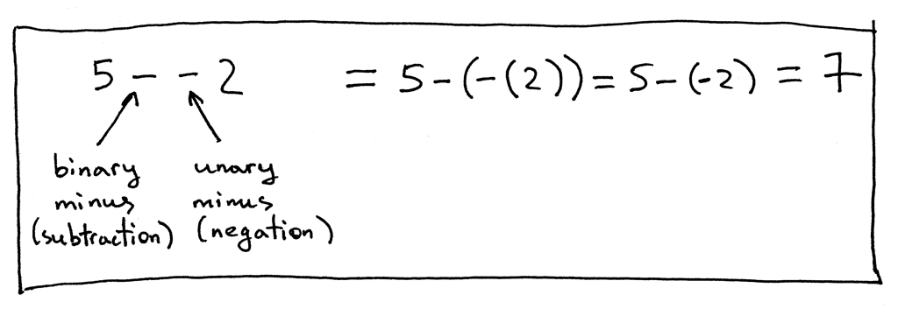
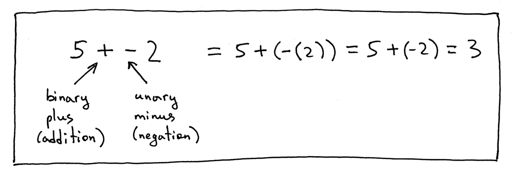
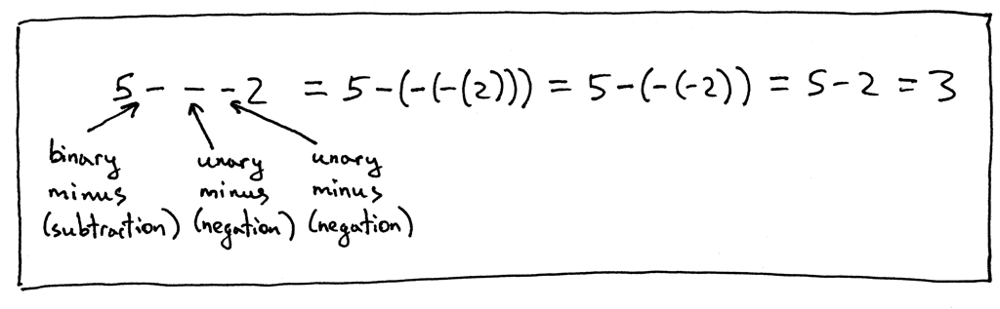
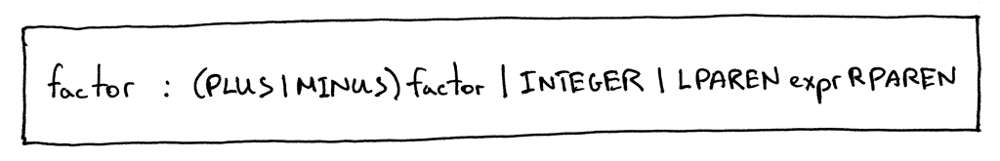
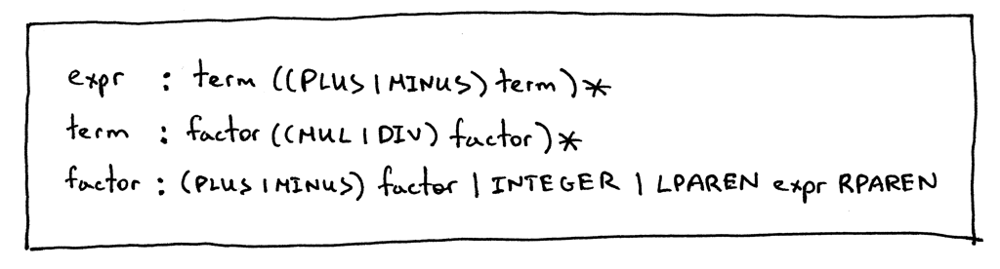

In this article, we’ll talk about unary operators, namely unary plus (+) and unary minus (-) operators.
What is a unary operator then? A unary operator is an operator that operates on one operand only.
Here are the rules for unary plus and unary minus operators:
- The unary minus (-) operator produces the negation of its numeric operand
- The unary plus (+) operator yields its numeric operand without change
- The unary operators have higher precedence than the binary operators +, -, *, and /
Let’s take a look at expression, “5 - - 2”:

In the expression “5 - - 2” the first ‘-‘ represents the binary subtraction operation and the second ‘-‘ represents the unary minus operation, the negation.
And some more examples:


Now we update factor rule to handle unary plus and unary minus operators:

so the full grammar changs to:

The next step is to add an AST node class to represent unary operators.
This one will do:
class UnaryOp(AST):
def __init__(self, op, expr):
self.token = self.op = op
self.expr = exprThe constructor takes two parameters: op, which represents the unary operator token (plus or minus) and expr, which represents an AST node.
Our updated grammar had changes to the factor rule, so that’s what we’re going to modify in our parser - the factor method. We will add code to the method to handle the “(PLUS | MINUS) factor” sub-rule:
def factor(self):
"""factor : (PLUS | MINUS) factor | INTEGER | LPAREN expr RPAREN"""
token = self.current_token
if token.type == PLUS:
self.eat(PLUS)
node = UnaryOp(token, self.factor())
return node
elif token.type == MINUS:
self.eat(MINUS)
node = UnaryOp(token, self.factor())
return node
elif token.type == INTEGER:
self.eat(INTEGER)
return Num(token)
elif token.type == LPAREN:
self.eat(LPAREN)
node = self.expr()
self.eat(RPAREN)
return nodeAnd now we need to extend the Interpreter class and add a _visit_UnaryOp_ method to interpret unary nodes:
def visit_UnaryOp(self, node):
op = node.op.type
if op == PLUS:
return +self.visit(node.expr)
elif op == MINUS:
return -self.visit(node.expr)The complete code:
""" SPI - Simple Pascal Interpreter """
###############################################################################
# #
# LEXER #
# #
###############################################################################
# Token types
#
# EOF (end-of-file) token is used to indicate that
# there is no more input left for lexical analysis
INTEGER, PLUS, MINUS, MUL, DIV, LPAREN, RPAREN, EOF = (
'INTEGER', 'PLUS', 'MINUS', 'MUL', 'DIV', '(', ')', 'EOF'
)
class Token(object):
def __init__(self, type, value):
self.type = type
self.value = value
def __str__(self):
"""String representation of the class instance.
Examples:
Token(INTEGER, 3)
Token(PLUS, '+')
Token(MUL, '*')
"""
return 'Token({type}, {value})'.format(
type=self.type,
value=repr(self.value)
)
def __repr__(self):
return self.__str__()
class Lexer(object):
def __init__(self, text):
# client string input, e.g. "4 + 2 * 3 - 6 / 2"
self.text = text
# self.pos is an index into self.text
self.pos = 0
self.current_char = self.text[self.pos]
def error(self):
raise Exception('Invalid character')
def advance(self):
"""Advance the `pos` pointer and set the `current_char` variable."""
self.pos += 1
if self.pos > len(self.text) - 1:
self.current_char = None # Indicates end of input
else:
self.current_char = self.text[self.pos]
def skip_whitespace(self):
while self.current_char is not None and self.current_char.isspace():
self.advance()
def integer(self):
"""Return a (multidigit) integer consumed from the input."""
result = ''
while self.current_char is not None and self.current_char.isdigit():
result += self.current_char
self.advance()
return int(result)
def get_next_token(self):
"""Lexical analyzer (also known as scanner or tokenizer)
This method is responsible for breaking a sentence
apart into tokens. One token at a time.
"""
while self.current_char is not None:
if self.current_char.isspace():
self.skip_whitespace()
continue
if self.current_char.isdigit():
return Token(INTEGER, self.integer())
if self.current_char == '+':
self.advance()
return Token(PLUS, '+')
if self.current_char == '-':
self.advance()
return Token(MINUS, '-')
if self.current_char == '*':
self.advance()
return Token(MUL, '*')
if self.current_char == '/':
self.advance()
return Token(DIV, '/')
if self.current_char == '(':
self.advance()
return Token(LPAREN, '(')
if self.current_char == ')':
self.advance()
return Token(RPAREN, ')')
self.error()
return Token(EOF, None)
###############################################################################
# #
# PARSER #
# #
###############################################################################
class AST(object):
pass
class BinOp(AST):
def __init__(self, left, op, right):
self.left = left
self.token = self.op = op
self.right = right
class Num(AST):
def __init__(self, token):
self.token = token
self.value = token.value
class UnaryOp(AST):
def __init__(self, op, expr):
self.token = self.op = op
self.expr = expr
class Parser(object):
def __init__(self, lexer):
self.lexer = lexer
# set current token to the first token taken from the input
self.current_token = self.lexer.get_next_token()
def error(self):
raise Exception('Invalid syntax')
def eat(self, token_type):
# compare the current token type with the passed token
# type and if they match then "eat" the current token
# and assign the next token to the self.current_token,
# otherwise raise an exception.
if self.current_token.type == token_type:
self.current_token = self.lexer.get_next_token()
else:
self.error()
def factor(self):
"""factor : (PLUS | MINUS) factor | INTEGER | LPAREN expr RPAREN"""
token = self.current_token
if token.type == PLUS:
self.eat(PLUS)
node = UnaryOp(token, self.factor())
return node
elif token.type == MINUS:
self.eat(MINUS)
node = UnaryOp(token, self.factor())
return node
elif token.type == INTEGER:
self.eat(INTEGER)
return Num(token)
elif token.type == LPAREN:
self.eat(LPAREN)
node = self.expr()
self.eat(RPAREN)
return node
def term(self):
"""term : factor ((MUL | DIV) factor)*"""
node = self.factor()
while self.current_token.type in (MUL, DIV):
token = self.current_token
if token.type == MUL:
self.eat(MUL)
elif token.type == DIV:
self.eat(DIV)
node = BinOp(left=node, op=token, right=self.factor())
return node
def expr(self):
"""
expr : term ((PLUS | MINUS) term)*
term : factor ((MUL | DIV) factor)*
factor : (PLUS | MINUS) factor | INTEGER | LPAREN expr RPAREN
"""
node = self.term()
while self.current_token.type in (PLUS, MINUS):
token = self.current_token
if token.type == PLUS:
self.eat(PLUS)
elif token.type == MINUS:
self.eat(MINUS)
node = BinOp(left=node, op=token, right=self.term())
return node
def parse(self):
node = self.expr()
if self.current_token.type != EOF:
self.error()
return node
###############################################################################
# #
# INTERPRETER #
# #
###############################################################################
class NodeVisitor(object):
def visit(self, node):
method_name = 'visit_' + type(node).__name__
visitor = getattr(self, method_name, self.generic_visit)
return visitor(node)
def generic_visit(self, node):
raise Exception('No visit_{} method'.format(type(node).__name__))
class Interpreter(NodeVisitor):
def __init__(self, parser):
self.parser = parser
def visit_BinOp(self, node):
if node.op.type == PLUS:
return self.visit(node.left) + self.visit(node.right)
elif node.op.type == MINUS:
return self.visit(node.left) - self.visit(node.right)
elif node.op.type == MUL:
return self.visit(node.left) * self.visit(node.right)
elif node.op.type == DIV:
return self.visit(node.left) / self.visit(node.right)
def visit_Num(self, node):
return node.value
def visit_UnaryOp(self, node):
op = node.op.type
if op == PLUS:
return +self.visit(node.expr)
elif op == MINUS:
return -self.visit(node.expr)
def interpret(self):
tree = self.parser.parse()
if tree is None:
return ''
return self.visit(tree)
def main():
while True:
try:
text = input('spi> ')
except EOFError:
break
if not text:
continue
lexer = Lexer(text)
parser = Parser(lexer)
interpreter = Interpreter(parser)
result = interpreter.interpret()
print(result)
if __name__ == '__main__':
main()Next, we will take a look at the Pascal